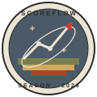

SCOREFLOWFLIGHT DYNAMICS DIVISION
赛事遥测终端 / SF–026 · REV 05

MISSION CONTROL / M.LEAGUE 2026–2027
每一场对局，都是一段新的轨迹。SEASON TELEMETRY · SEPTEMBER
OBSERVATION WINDOW09.14 — 09.302026 / REGULAR SEASON
01积分轨迹 SCORE TRAJECTORY
Y / PT X / GAMECHANNEL REGISTER 队伍识别 / 10 CHANNELS
02对局记录 MATCH LOG
SF / BPOINTS VERIFIED / 数据已校验